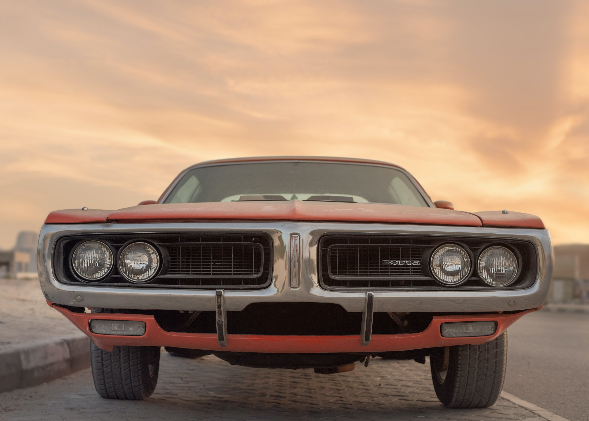

A Comprehensive Exploration of Classic Vehicles
Classic cars, often referred to as vintage or antique automobiles, evoke a sense of nostalgia and admiration for a bygone era. These vehicles, typically defined by their age, design, and historical significance, hold a special place in the hearts of enthusiasts and collectors worldwide. In this exploration, we will delve into the characteristics that define classic cars, the cultural and historical context surrounding them, and the enduring appeal that has made them timeless icons.
Defining Classic Cars
Classic cars are automobiles that possess a unique combination of age, design, and historical significance. While there is no universal consensus on the exact definition, various organizations and enthusiasts generally agree that a car becomes a classic after a certain number of years, typically around 20 to 25 years. This time frame allows the vehicle to develop a historical context, marking it as a representative of a specific era in automotive history.
Design Elements
One of the defining features of classic cars is their distinctive design, often characterized by elegant lines, intricate detailing, and a sense of craftsmanship that is sometimes lost in contemporary mass production. Classic cars hail from an era where each vehicle was a work of art, carefully sculpted by designers who prioritized aesthetics as much as functionality. These cars often boast unique features like chrome accents, sweeping fenders, and iconic grilles, contributing to their timeless charm.